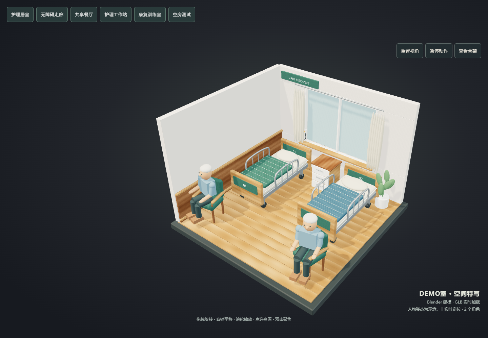
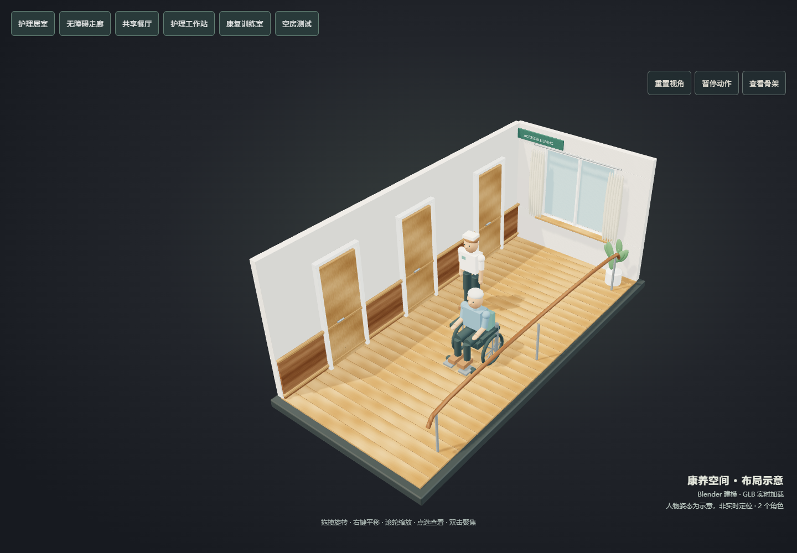
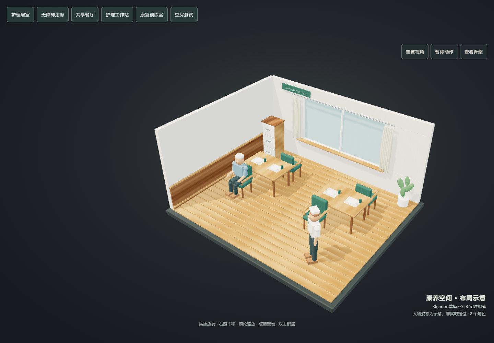
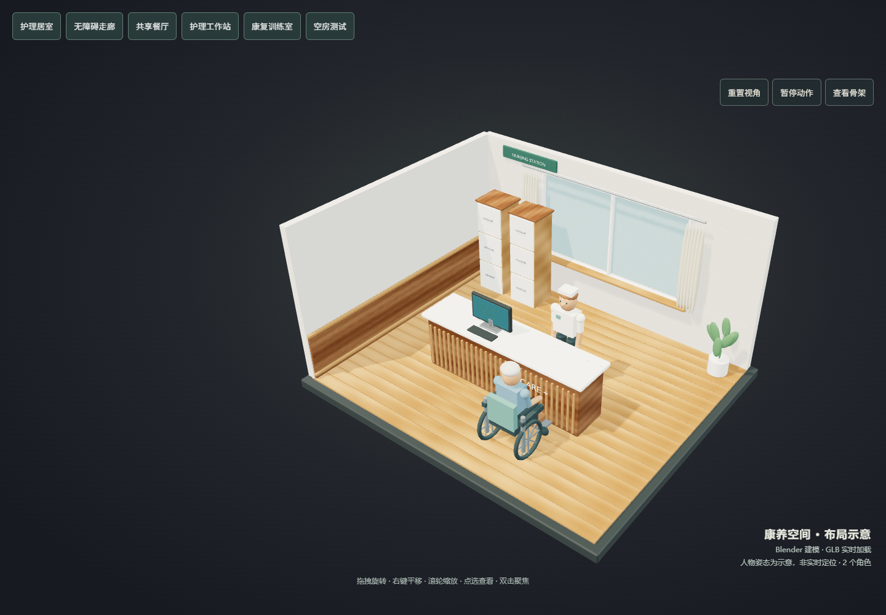
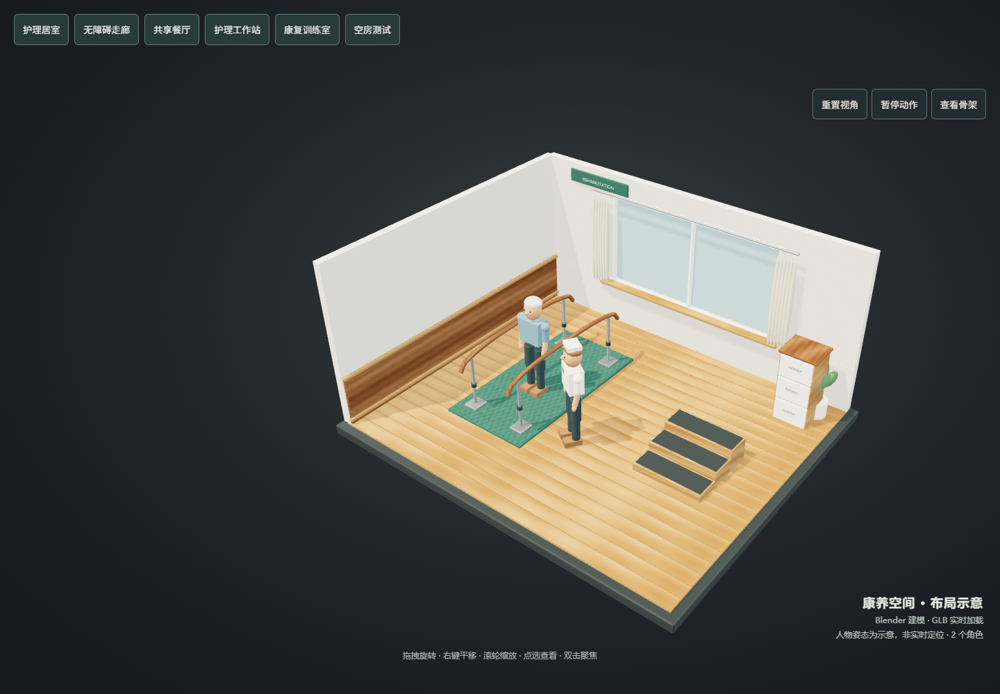

01 / 护理居室
双护理床、钢制底架与脚轮、圆弧床栏、枕头与织物床品、橡木柜体、软垫座椅、窗帘和呼叫器。约 1.51 MB / 36,928 三角面（环境资产）。
在 Blender 引擎中重新制作的五套室内场景。家具圆角、床品、扶手、门窗、窗帘与材质贴图均为真实三维资产，已接入现有网页加载器，而非渲染图片或旧方块场景的格式转换。

双护理床、钢制底架与脚轮、圆弧床栏、枕头与织物床品、橡木柜体、软垫座椅、窗帘和呼叫器。约 1.51 MB / 36,928 三角面（环境资产）。

木门门套、门把手、连续扶手、分块地板与室内绿植。

圆角木餐桌、软包扶手椅、餐具与织物餐垫。

格栅接待台、立体字、显示终端、键盘和分类收纳柜。

弧形平行杠、金属调高立柱、训练垫、带防滑踏面的台阶与器械柜。
这是轻量化、半写实的建筑展示模型，不是照片级扫描模型。截图中的人物沿用网页原有示意角色，未嵌入 GLB，也不代表真实人员位置。
用 Blender 打开 .blend 可继续编辑；GLB 为网页运行资产，存放在项目 public/models。已保留主题切换、人物数据绑定、点选、缩放和加载失败回退。整栋园区总览未替换，线上版本未发布。
离线浏览本页可查看截图和文件；交互式网页需启动项目本地开发服务。